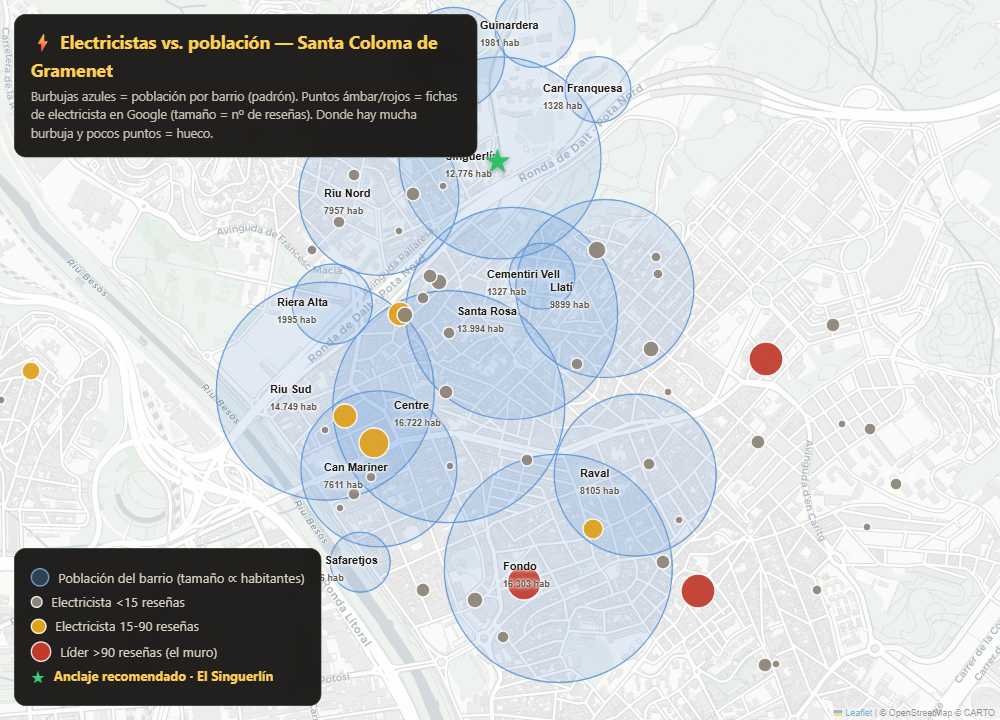

Censo geolocalizado de la competencia en Google Maps, cruce con la población por barrio (padrón) y densidad competitiva real — para decidir en qué barrio anclar la ficha y entrar en el pack de mapas.
Santa Coloma tiene 55 electricistas con ficha en 7 km²: mercado maduro, con 3 fichas de 94-174 reseñas que forman un muro. Pero cruzando dónde están los competidores (coordenadas reales) con dónde vive la gente (padrón por barrio) aparece la jugada: el centro-sur (Centre, Fondo, Riu, Raval) está saturado, y los barrios del norte con hueco real —Can Franquesa, Les Oliveres— tienen muy poca población (1.300-3.300 hab), así que el hueco no sirve de mucho. La excepción es El Singuerlín: uno de los barrios más poblados (12.776 hab) y, a la vez, de los menos saturados (7 rivales pegados). Ahí está la oportunidad de proximidad.

| Barrio | Población | Rivales <500 m | Rivales <900 m | Veredicto |
|---|---|---|---|---|
| El Centre | 16.722 | 14 | 31 | saturado |
| El Fondo | 16.303 | 10 | 28 | saturado + muro reseñas |
| El Riu Sud | 14.749 | 11 | 23 | competido |
| Santa Rosa | 13.994 | 10 | 30 | competido |
| El Singuerlín | 12.776 | 7 | 20 | ★ populoso y despejado |
| El Llatí | 9.899 | 6 | 24 | medio |
| El Raval | 8.105 | 11 | 28 | saturado por hab. |
| El Riu Nord | 7.957 | 12 | 20 | saturado por hab. |
| Les Oliveres | 3.308 | 2 | 12 | hueco pero poca gente |
| Can Franquesa | 1.328 | 0 | 9 | hueco pero casi vacío |
La lectura clave: los barrios con 0-2 rivales (Can Franquesa, Les Oliveres) tienen tan poca población que el hueco vale poco. El Singuerlín es el único barrio grande (12.776 hab) con competencia floja pegada (7) — el resto de barrios poblados tienen 10-14 rivales a <500 m. Ahí es donde población y hueco coinciden.
| Ficha | Valoración | Reseñas | 24h |
|---|---|---|---|
| Multiserveis Barcelona | 5,0 ★ | 174 | — |
| Reformes JAR | 5,0 ★ | 152 | — |
| ✅ Lampista Santa Coloma 24/7 | 4,9 ★ | 94 | Sí |
| Realización de Estudios y Serv. Energéticos | 2,7 ★ | 68 | — |
| ReforBCN Solucions | 4,7 ★ | 39 | — |
| SIV · Trabajos verticales | 4,5 ★ | 32 | — |
| Encarnacion Solutions bcn | 4,8 ★ | 20 | Sí |
Solo 3 fichas superan las 90 reseñas; la cuarta (68) tiene 2,7 ★ — eslabón débil (mala reputación con posición alta). Debajo, cola larga de ~45 fichas con 0-40 reseñas. Con 20-30 reseñas reales ya te cuelas por delante de casi todos.
12.776 habitantes y solo 7 rivales a <500 m (vs. 14 en el Centre). El único barrio grande con hueco.
Los líderes tienen 94-174 reseñas; tú empiezas en 0. Su web suele ser pobre o inexistente.
Para un electricista de urgencias el tipo correcto es "negocio a domicilio" (área de servicio): sin dirección pública, con el centro en la dirección real de Víctor. Los datos apuntan a El Singuerlín: el barrio poblado con menos competencia pegada. Los "huecos" del norte (Can Franquesa, Les Oliveres) están casi vacíos y no compensan.
Demanda: a nivel provincial "electricista urgente Barcelona" ~140/mes y "electricista 24 horas Barcelona" ~110/mes; el volumen local exacto de Santa Coloma es modesto. La bolsa de "electricista cerca de mí" (sin ciudad) se gana con la ubicación de la ficha — por eso anclar en el barrio poblado-y-despejado (Singuerlín) tiene sentido, sumado al peso mayor de reseñas + citaciones + web.